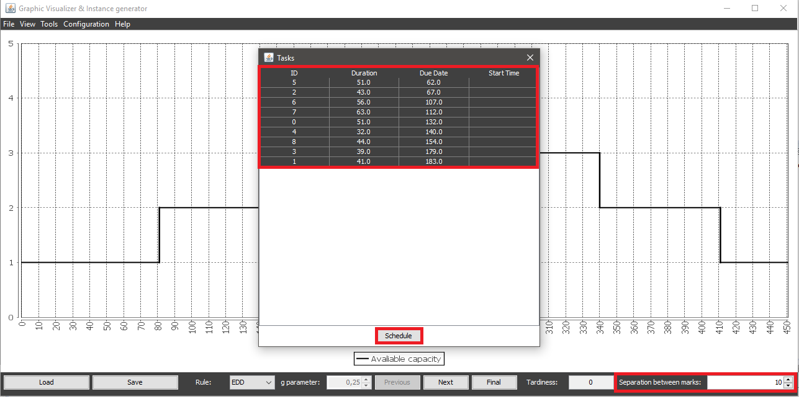
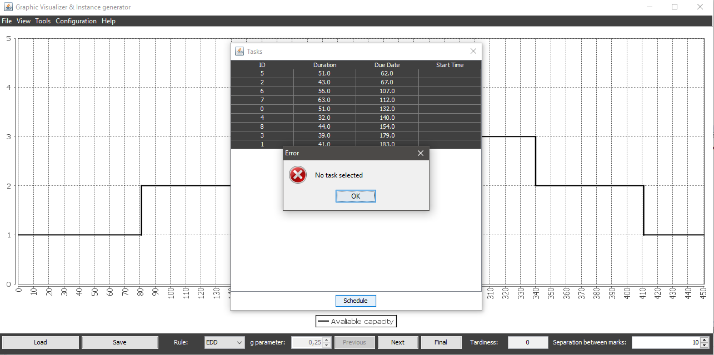
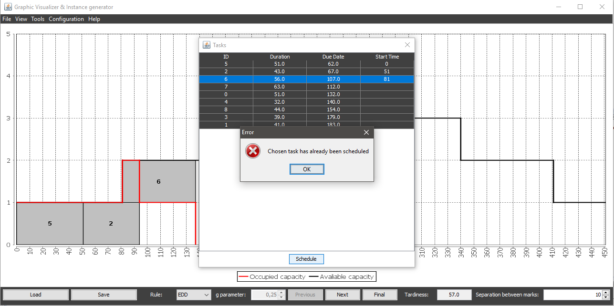

To perform a manual scheduling is neccesary to acces the tasks table and that there's no scheduled instance (neither partial of fully) in the application at that moment. If there's any active scheduling the manual scheduling option will be disabled.
Once in the right dialog and fulfilling the previous condition, to perform this scheduling it's neccesary to select the row for the tasks you want to schedule and click at the Schedule button at the bottom of the table.
You can also modify the numeric value specified next to the Separation between marks label to choose which separation between graduation marks you want to display as you schedule the instance.
Everytime a new task is scheduled the tardiness value, displayed at the bottom right corner of the main window, will be updated.
If there's no selected row or the selected task has already been scheduled the system will warn the user.
 